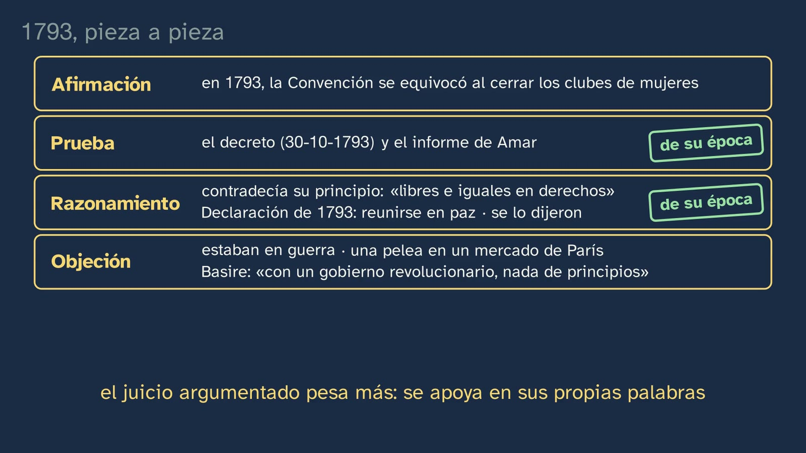

Can we judge the past?
In a nutshell
The last tool of the craft: judging the past without cheating. The case opens the class: in September 1791, Olympe de Gouges publishes a Declaration of the Rights of Woman and of the Female Citizen that follows the 1789 Declaration article by article and puts woman into each one. Two years later, she is guillotined. Can we judge today those who left women out?
Before answering, the class corrects what is almost always told: she was not condemned for her Declaration, but for her posters of 1793, above all Les Trois Urnes, which proposed that the people choose between three forms of government, one of them monarchy. A law of March 1793 punished that with the maximum penalty. But two weeks later, the Moniteur held her up as a lesson for women: «she wanted to be a statesman».
Then comes the bet, with the two easy answers, which are today's two traps. Presentism («they were less clever than us») measures the people of the past against what we know today. «Times were different» takes it for granted that nobody back then saw what we see today. Both deny the same thing: that people in the past thought. To get out of both, two steps:
- Understand their world, through their sources. Talleyrand sees the contradiction in 1791 («seems impossible to explain») and still defends it with nature; the decree that closes the women's clubs and Amar's report (30-10-1793) reason from the same idea. They weren't stupid: they started from an idea that almost everyone took for granted.
- Judge them by the standards of their own time: who saw it differently, and said so (Condorcet, Gouges, Wollstonecraft, Charlier in the very session of the decree), and what their own principles said (article 1 of 1789). So yes, they can be judged.
Students apply the two steps to a second case, the children in British factories in 1832–1833, and the class closes with the difference between a reasoned historical judgement and an anachronism, and with an open debate between historians: Acton (1895) against Bloch (around 1942).
Objective. By the end, students will be able to understand the people of the past through their ideas and their world without excusing everything, and to tell a reasoned historical judgement from anachronism.
A note on the answer. The class doesn't forbid judging by today's standards: it asks you to say so («and if you judge it by a standard of today, say so: that way your judgement can be discussed»). And it doesn't treat the debate between historians as closed: it shows the best version of Acton and of Bloch, and lets students take sides, with reasons.
A note on neutrality. The 1793 case belongs to the Revolution, but the class doesn't judge the Revolution or a party: it judges one concrete decision (closing the women's clubs) with the sources from that same session. That is why the judgement on the board carries its strongest objection (the war, the fight in the market, «no more principles») and stays within what can be backed up.

Curriculum
Spain's Royal Decree 243/2022, Contemporary World History, an elective in the first year of the Bachillerato in Humanities and Social Sciences (consolidated text in the Official State Gazette, BOE). Our translation of the official Spanish text. Competence 7 asks students to «assess critically […] the actions carried out and the experiences lived, from the ethical perspective contained in the Universal Declaration of Human Rights», and competence 8 to attend to «the situation of women, to gender and age roles […] and to the struggle for dignity and against discrimination».
| Element | What the decree says | Where the class works on it |
|---|---|---|
| Core knowledge (block A) | «The historian's work: historical sources, historiography and narratives of the past. Historical argument. […] Historical perspective in narratives about the past.» | The whole class: the two steps, the four-piece judgement, Acton and Bloch |
| Core knowledge (block A) | «The evolution of the situation of women in contemporary society: mechanisms of domination and submission and sociocultural changes. The movement for the emancipation of women and the struggle for equality […]» | Gouges, Talleyrand, the decree and Amar, Condorcet, Wollstonecraft, Charlier; Kent and Campoamor (1931) |
| Core knowledge (block A) | «Evolution of population, demographic cycles and ways of life. Changes and continuities in life cycles and in the social organisation of the contemporary world. Vulnerable and marginalised groups. […]» | The factory children, 1832–1833; the Benot Law (1873) |
| Criterion 7.1 | To form reasoned opinions and debate through work on historical and historiographical texts | The 1793 judgement, piece by piece; Acton and Bloch |
| Criterion 8.2 | To analyse the situation of women and gender and age roles, with their mechanisms of domination and the struggle against discrimination | Women kept out of politics in 1791 and 1793; children in the factory |
What students need to bring. The four questions for a source (class 1), «by what criterion?» in front of the word progress (class 4) and the four-piece argument (class 5): claim, evidence, reasoning and objection. And the 1789 Declaration, which is introduced in one sentence.
Where it comes back. Topic 2 («The end of the Ancien Régime: the liberal revolutions») brings in the French Revolution as content, with a commentary on the 1789 Declaration (class 4) and the Terror (class 5). Topic 4 goes back to the factory and to class society. Here they are cases for learning the craft.
How the class is built
Video chapters
| Part | What it does | Why |
|---|---|---|
| What you already know | The three questions from class 5 and their solutions | Retrieve before adding |
| A woman, in 1791 | Gouges's Declaration over the 1789 one, article X, why she was really condemned, and the Moniteur | The case, with what is repeated and false corrected on screen |
| Two traps | The bet; presentism and «times were different», which deny the same thing | First make the mistake visible: that is the order of the only experiment on contextualising (Huijgen and others, 2018) |
| Step 1: understand their world | Talleyrand, the decree and Amar's report; Condorcet and the power of habit | Understanding isn't excusing: it is knowing where it came from |
| Step 2: judge by the standards of their own time | Condorcet, Gouges, Wollstonecraft and Charlier; and article 1 of 1789 | What we see today, someone already saw, and the standard was written down |
| Another case: children in the factories | Bentley and Crabtree (1832); what those who defended it said; Oastler and Parliament; the 1833 law | Students apply the two steps, with two pauses to think |
| Judgement or anachronism | The definition, and the 1793 judgement in four pieces | The objection sets the limits of the judgement; it doesn't cancel it |
| Can we judge? | Acton and Bloch; and what most now accept, according to those who study how history is taught | An open debate, with the best version of each side |
| The typical mistake | Three sentences to classify | The two traps, against a reasoned judgement |
| Practice | The summary, the six tools of the topic, three exercises and the hundred-years question | Kent, the Benot Law and Campoamor: three Spanish cases |

A plan for a 50-minute lesson
| Minutes | What happens |
|---|---|
| 0–4 | No video yet: the bet on the worksheet. In 1791 French women don't vote; what would you say about the men who made those laws? Each student chooses and writes why. |
| 4–14 | Video up to the bet («Make your bet»). Stop and compare answers: how many chose 1 or 2? |
| 14–26 | Video through the two steps, up to Tristán's mid-class appearance. Fill in the worksheet table: voices against and for, with their year. |
| 26–34 | Video through the factory case, stopping at the two pauses («What did those who defended it say?», «Did anyone see it differently, in their own time, and say so?»). |
| 34–46 | The activity: «One decree, four pieces» (below). |
| 46–50 | Video to the end, with the open question. The exercises, for homework. |
Typical mistakes and how they are handled
| Mistake | What research says | How the class handles it |
|---|---|---|
| «They were less clever than us» (presentism) | Students tend to dismiss people in the past as «not as smart as we are» (Lee, 2005, p. 47), backed by an idea of the past as a time of deficits (p. 45). Wineburg calls it «our psychological condition at rest» (2001, p. 19): it's what comes out without effort | Talleyrand sees the contradiction and defends it: he wasn't stupid, he started from an idea. The word «presentism» comes from Seixas and Morton (2013, p. 136), not from Lee |
| «Times were different: nobody thought otherwise» | It's the mirror-image mistake. Taken to the extreme, thinking there is no continuity with the past is «as grave an error» as believing it mirrors ours; the past is «a foreign country», not «a foreign planet» (Wineburg, 2001, p. 12) | Condorcet (1790), Gouges (1791), Wollstonecraft (1792), Charlier (1793); Oastler (1830) and Parliament (1833) |
| «Understanding is excusing» | Taking someone's perspective is inferring how they thought, with evidence, and «does not mean identifying with those actors» (Seixas and Morton, 2013, p. 136) | «Understanding this isn't excusing it: it's knowing where it came from» |
| «You can't judge by today's standards» | Seixas and Morton ask us to be «cautious about imposing contemporary standards» (p. 168), not to give up: judgements are there, implicit or explicit, and they should be made explicit | You can, if you say so: the 1833 bar against today's |
| «Put yourself in their shoes» | With 254 Dutch students, the first-person task («imagine you are…») produced more presentism and more moral judgements than the third-person one (De Leur, Van Boxtel and Wilschut, 2017) | Every question in the third person: «what did those who defended it say?» |
| «She was guillotined for being a feminist» | Videos and websites repeat it. The charge is about writings against the «sovereignty of the people» (law of 29-3-1793); the 1791 Declaration doesn't appear (Wallon, 1880, vol. II, pp. 167–172). C. Hesse sums it up: «guillotined on 3 November 1793 for publishing a seditious broadside» (Encyclopedia of Modern Europe) | It is said on screen and crossed out; and the class tells what her sex really did weigh: the Moniteur, two weeks later |
Questions and solutions
Pause and think (inside the video)
- The bet: what would you say about the men who made those laws? The first two options are the two traps. The third, «neither», is the class's own, but the reason is what counts, not the box.
- In their own time, with what could you tell them they were wrong? With two things: people of their time who said so, and their own law, article 1 of 1789 («free and equal in rights»).
- What did those who defended child labour say at the time? That parents were free (the objection, as summed up by their opponent M. Sadler: «their parents are free agents», Hansard, 16-3-1832, c. 345) and that many brought their children into the factory, and so had them in sight (W. Bolling, cotton manufacturer, Hansard, 18-7-1833, c. 910; he says «have them under their own eye», without saying what for); that with fewer hours they couldn't compete with other countries (Lord Althorp, 5-7-1833; Bolling, c. 911); and that the children seemed «always cheerful and alert» (A. Ure, 1835, p. 301).
- Did anyone see it differently, in their own time, and say so? Many: Oastler («Yorkshire Slavery», Leeds Mercury, 16-10-1830), those who asked in Parliament for two hours less a day, and Cobbett, who mocked the competition argument in the same session (c. 912).
- The typical mistake. 1) «Times were different»: in 1830, Oastler called it slavery. 2) Presentism: they reasoned from the idea of nature. 3) A reasoned judgement, if it brings its evidence: in that same Parliament people asked for two hours less, and the law left twelve hours for those aged 13 to 18 (s. II).
Practice (the solutions open the first class of topic 2)
- Victoria Kent, 1 October 1931. She wasn't against equality: «it is not a matter of capacity; it is a matter of timeliness for the Republic» (Diario de Sesiones, no. 48, p. 1352; our translation). Step 1: she feared that a women's vote that was not yet very republican, mobilised at the time by the Catholic right, would endanger the newborn Republic; she says that if Spanish women were all workers or had been through university, she would ask for the vote (p. 1352), and that by asking for the postponement she «gives up an ideal» (p. 1351). Careful: in her speech she doesn't say «Church» or «clergy»; that shouldn't be attributed to her. Step 2: in the same session, Campoamor answered her respectfully («far be it from me to censure or attack the statements of my colleague, Miss Kent», p. 1352) and defended the vote, which was passed by 161 to 121 (pp. 1360–1361). What counts is that the student separates what Kent thought about equality (yes) from what she asked for in 1931 (to wait), and judges her decision by what was said that afternoon.
- The Benot Law (24-7-1873, Gaceta de Madrid, 28-7-1873, p. 1193). Open. An example. Claim: it was a step forward for its time, but it stayed on paper. Evidence: it bans under-10s from working in factories, workshops, foundries and mines, and allows at most 5 hours to boys under 13 and girls under 14 (arts. 1 and 2); eleven years later, the official questionnaire of the Commission for Social Reforms still asked whether it had been obeyed (Viñao, 2005, p. 38, note 22). Reasoning: by the standard of its own time, the British law of 1833 already had four paid inspectors, while the Spanish one left enforcement to mixed juries that were never set up (Congress website: «its provisions were barely complied with»). Objection: the First Republic lasted less than a year. Without anachronism: if it is faulted by today's bar (compulsory school up to 16), say so.
- Clara Campoamor, 1 October 1931. Yes: she uses the principle of her own time, as Gouges used that of 1789. She reminds the deputies that they have «the right the law has given you, the law you yourselves made, but you do not have the natural right, the fundamental right, which rests on respect for every human being» (p. 1353), and presents herself as «a citizen before a woman» (p. 1354). Careful: «freedom is learnt by exercising it» isn't literally from that day; what she quotes is a sentence by Humboldt (p. 1354).
Open question. A hundred years from now, which of the things we do today will look like a mistake? And who is already saying so? It has no solution. What counts is that the student applies the two steps to the present: what we take for granted today (step 1), and who is already questioning it, with which of our own principles (step 2).

A classroom activity: one decree, four pieces
Objective. To write a reasoned historical judgement on a decision from the past, say by what standard it is judged and find the best objection to it.
Preparation. Groups of three or four. Each group gets the four extracts below, all from the session of the Convention of 30 October 1793 or its surroundings.
| Who | What they say | Where |
|---|---|---|
| The decree | «Les clubs et Sociétés populaires de femmes, sous quelque dénomination que ce soit, sont défendus.» (Women's clubs and popular societies, whatever their name, are forbidden.) | Archives parlementaires, 1st series, vol. LXXVIII, p. 51 |
| Amar, deputy | «Chaque sexe est appelé à un genre d'occupation qui lui est propre ; son action est circonscrite dans ce cercle qu'il ne peut franchir» (Each sex is called to a kind of occupation of its own; its action is confined to that circle, which it cannot cross.) | Ibid., p. 50 |
| Charlier, deputy | «A moins que vous ne contestiez que les femmes font partie du genre humain, pouvez-vous leur ôter ce droit commun à tout être pensant ?» (Unless you deny that women are part of the human race, can you take from them this right common to every thinking being?) | Ibid., p. 51 |
| Basire, deputy | «Qu'on ne me parle plus de principes» (Let no one talk to me of principles any more.) | Ibid., p. 51 |
Steps.
- Each group writes a judgement on the decree in four pieces, in the third person («the Convention…», never «I, in 1793…»).
- Underneath, one line: by what standard are we judging? That of their time (which one?) or today's (say so).
- Groups swap judgements. Each one classifies the judgement it receives: a judgement by the standards of its time, a judgement by today's standards stated as such, or anachronism. And it hands it back with the best objection it can think of.
- Wrap-up: which objection changed a judgement the most? Did any go from «they were ignorant» to an argument?
What counts. That the evidence comes from the sources, that the standard is stated, and that the objection sets limits to the judgement without cancelling it.
Open resources
Checked on 19/11/2026, free and without registration.
| Resource | What it offers | Link |
|---|---|---|
| Internet Archive, Les Droits de la femme (1791) | Olympe de Gouges's pamphlet in full, in facsimile, from the Newberry Library copy, in French | https://archive.org/details/lesdroitsdelafem00goug |
| Archives parlementaires (Persée) | The records of the revolutionary assemblies, including the session of 30-10-1793, in French | https://www.persee.fr/collection/arcpa |
| Internet Archive, A Vindication of the Rights of Woman | The first edition of Mary Wollstonecraft's book (London, 1792), with its dedication to Talleyrand | https://archive.org/details/bim_eighteenth-century_a-vindication-of-the-rig_wollstonecraft-mary_1792 |
| Historic Hansard | The British Parliament's 1833 debates on the factories | https://api.parliament.uk/historic-hansard/commons/1833/jul/18/factories-regulations |
| BOE, Gaceta de Madrid | The Benot Law, in the Gaceta of 28 July 1873, p. 1193, in Spanish | https://www.boe.es/datos/pdfs/BOE//1873/209/A01193-01193.pdf |
| Spanish Congress of Deputies, Diarios de Sesiones | The session of 1 October 1931, with Kent and Campoamor (no. 48, pp. 1347–1394), in Spanish | https://app.congreso.es/est_sesiones/ |
| Historical Thinking Project | The concepts of historical perspective and the ethical dimension, with their criteria | https://historicalthinking.ca/ethical-dimensions |
For teachers: what doesn't fit in the video
- The pamphlet's date. Les Droits de la femme. À la Reine carries no date or printer. It is from September 1791 because the postscript mentions events of the 10th to the 14th of that month. The 5 and 14 September dates that get repeated have no source.
- «Sur l'échafaud», not «the guillotine». Article X says «monter sur l'échafaud»: the scaffold. The guillotine was first used in April 1792, after the pamphlet.
- Copy and change. Gouges's Declaration copies the structure and almost every sentence of the 1789 one, but really changes several articles (IV, VII, IX, XI, XIII, XIV, XV and XVII). Comparing them in class, article by article, is a good source exercise.
- There is no record that any assembly read it. «The Assembly refused to examine it» is repeated without a source.
- What was never posted. According to her trial, the bill-poster refused to put up Les Trois Urnes, and she was arrested first (20 July 1793). That is why the class says it «proposed», not that it circulated around Paris.
- The Moniteur sentence («elle voulut être homme d'État») is often attributed to Chaumette. It comes from an unsigned article, «Aux républicaines» (Moniteur, no. 59, 19-11-1793), which the Moniteur takes from the Feuille de Salut public. Chaumette spoke two days earlier before the Commune, and «virago» only appears in another version, that of the Révolutions de Paris.
- Talleyrand and Wollstonecraft. Wollstonecraft's book (London, 1792) is dedicated to Talleyrand and argues with his report. The sentence she throws back at him, «If so, on what does your constitution rest?», is in the dedication (p. ix).
- Other voices of 1790–1792: Etta Palm d'Aelders, before the Assembly and in her pamphlets. She isn't in the video, so as not to pile up names.
- The 1833 law and the 8-hour mistake. The text of section VIII (pp. 986–987) says 9 hours a day and 48 a week for children aged 9 to 13, in stages, from 1834 to 1836. But the marginal note on p. 986 says «eight hours»: it stayed as in the bill, which in August still said eight (Althorp, Hansard, 9-8-1833, c. 449). That is where the «8 hours» repeated even by the British Parliament's website (Living Heritage) comes from: a good example of why you have to go to the document. Those aged 13 to 18, 12 hours a day and 69 a week (s. II); in silk mills, under-13s could work 10 (s. VIII). The 2 hours of school (s. XXI) and the four paid inspectors (s. XVII) are the new features that made it enforced, halfway.
- The 1832 sources. Sadler's committee heard only one side, and its questions pushed the answer. The 1833 commission, requested by the manufacturers, took credibility away from it, but confirmed that children worked as many hours as adults. It's a good case for the four questions of class 1.
- Butterfield (1931), the third voice in the debate: he calls studying the past with the eyes of the present «the source of all sins and sophistries in history». He isn't in the video so as not to repeat Bloch's position.
- Bloch wrote the Apologie around 1941–1943, and it was published posthumously in 1949. Both sentences are in ch. IV, § I, «Juger ou comprendre?». The pages (70 and 72 of the 2nd edition, 1952) come from the page markers of the UQAC digital edition (Les Classiques des sciences sociales): the printed edition hasn't been seen, so the board cites only the chapter.
- The 1793 Declaration. On 24 June 1793, the new Declaration of rights recognises in its article 7 «le droit de s'assembler paisiblement»: the right to assemble peacefully. Four months later, the same Convention closes the women's clubs. It's the second piece of the reasoning in the judgement on the board, next to article 1 of 1789.
- «Most accept that judging is inevitable». It comes from a single, indirect source: P. Seixas (2015, p. 10), quoting L. Gibson (2014). It speaks of those who study how history is taught, not of all historians, and that's how the video puts it.
- The two-step tool is the channel's adaptation of Seixas and Morton (2013) and of the Historical Thinking Project's template «The Ethical Dimension». It hasn't been tested as such in a study.
- Samples. There is no large trial on teaching ethical judgement in history. What does have experiments is contextualisation, in the Netherlands (Huijgen and others, 2014, with 1,270 students; 2018, with 131).
To find out more
- P. Seixas and T. Morton, The Big Six Historical Thinking Concepts (2013), chs. 5 and 6 · S. Wineburg, Historical Thinking and Other Unnatural Acts (2001), ch. 1.
- O. Blanc, Marie-Olympe de Gouges. Une humaniste à la fin du XVIIIe siècle (2003) · J. W. Scott, Only Paradoxes to Offer (1996), ch. 2 · M. Bloch, The Historian's Craft (Manchester University Press).
- C. Hesse, The Other Enlightenment: How French Women Became Modern (2001) · J. Humphries, Childhood and Child Labour in the British Industrial Revolution (2010).
Sources
- O. de Gouges, Les Droits de la femme. À la Reine (1791), pp. 5–9 (Newberry Library) · Déclaration des droits de l'homme et du citoyen (1789), art. 1.
- H. Wallon, Histoire du Tribunal révolutionnaire de Paris, vol. II (1880), pp. 167–172 · J.-B. Duvergier, Collection complète des lois, vol. 5, p. 238 (law of 29-3-1793) · Les Trois Urnes (1793), British Library · Le Moniteur universel, no. 59, 29 Brumaire Year II (taken from the Feuille de Salut public).
- Talleyrand, report on public instruction (1791), Archives parlementaires, vol. XXX, p. 478 · Archives parlementaires, vol. LXXVIII, pp. 48–51 (decree, Amar, Charlier, Basire) · Déclaration des droits de l'homme et du citoyen de 1793, art. 7.
- Condorcet, «Sur l'admission des femmes au droit de cité» (1790), Œuvres, vol. X, pp. 121–122 · M. Wollstonecraft, A Vindication of the Rights of Woman (1792), p. ix.
- Report from the Committee on the Bill to Regulate the Labour of Children in the Mills and Factories (1832) · J. F. Scott and A. Baltzly, Readings in European History Since 1814 (1930), on that report: «the questions are frequently leading» · Factory Act, 3 & 4 Will. IV, c. 103 (1833), pp. 985–986 · Hansard, House of Commons, 16-3-1832, vol. 11, c. 345; 3-4-1833, vol. 17, cc. 79–113; 18-7-1833, vol. 19, cc. 910–912 · [S. Kydd], The History of the Factory Movement (1857), p. 100 · A. Ure, The Philosophy of Manufactures (1835), p. 301.
- Lord Acton, A Lecture on the Study of History (1895), p. 63 · M. Bloch, Apologie pour l'histoire (2nd ed., 1952), ch. IV, § I (pp. 70 and 72, according to the UQAC digital edition).
- Gaceta de Madrid, 28-7-1873, p. 1193 · A. Viñao, História da Educação, 17 (2005), pp. 33–50 · Diario de Sesiones de las Cortes Constituyentes, no. 48 (1-10-1931), pp. 1347–1394.
- P. Lee (2005), in How Students Learn: History, Mathematics, and Science in the Classroom, https://doi.org/10.17226/10126 · S. Wineburg (2001) · P. Seixas and T. Morton (2013) · P. Seixas, «A Model of Historical Thinking», Educational Philosophy and Theory (online, 2015), p. 10, https://doi.org/10.1080/00131857.2015.1101363 · T. Huijgen and others (2014 and 2018) · T. de Leur, C. van Boxtel and A. Wilschut (2017).
- Images: the pages of the 1791 pamphlet (Newberry Library), the poster Les Trois Urnes (British Library), the patriotic women's club (J.-B. Lesueur, Musée Carnavalet, CC0), Wollstonecraft's dedication (Internet Archive), the carding room (Barfoot, around 1840, Wellcome Collection), the 1833 law, Ure's title page, the Gaceta de Madrid (BOE) and the portrait of Victoria Kent, in the public domain. The woman writing is an illustration, not a portrait of Olympe de Gouges, and is labelled as such.
About this class
Script written by an AI (Claude, by Anthropic), with an independent review and a check of its data; a person approves it. Tristán is an illustrated teacher with a synthetic voice. This English version was translated by the same AI and reviewed by a person. This sheet is published under a CC BY 4.0 licence: it can be used, copied and adapted, crediting GinCol Lab.
How to cite this sheet
GinCol Lab (2026). Can we judge the past? GinCol Lab teacher sheet: Contemporary World History · 1st year of Bachillerato · The historian's craft · Class 6 of 6. https://gincollab.github.io/aula/en/historia-mundo-contemporaneo/t01-c6/. CC BY 4.0.
GinCol Lab teacher sheet · CC BY 4.0 · Source and errata